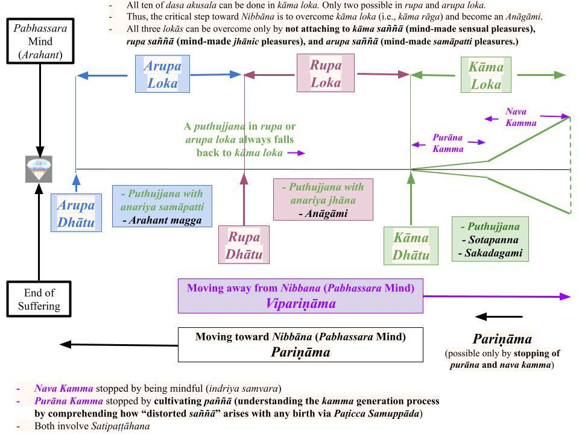

Vipariṇāma dukkha is one of the three types of "dukkha." “Aniccaṁ vipariṇāmi aññathābhāvi” is a verse that succinctly states the unfruitfulness of pursuing sensory pleasures, which brings out a deeper meaning of vipariṇāma dukkha.
March 5, 2024
Vipariṇāma - What Does It Mean?
1. Evolution, in the broadest sense, refers to the gradual development/improvement of something over time. It can be applied to many fields, including biology, technology, ideas, and culture. Of course, the well-known "theory of evolution" (පරිනාම වාදය in Sinhala) refers to Darwin's theory that humans evolved from monkeys. That means monkeys "progressed over time to evolve into humans." Of course, that "theory" is wrong per Buddha Dhamma, but that explains the meaning of "evolution."
- The Pāli word for "evolution" is "pariṇāma." Thus, vipariṇāma (විපරිනාම in Sinhala) means the opposite, i.e., gradual degradation of something over time. The English word for vipariṇāma is devolution. It refers to a decline or loss of function, characteristics, or structure.
- Thus, if our actions lead to increasingly bad outcomes over time (i.e. if it has vipariṇāma characteristics), it is time to reverse such actions and start on a new path.
Two Meanings of Vipariṇāma
2. First, one should be able to see how "how things go from good to bad" or "worse to worst." That can be seen by looking at the OUTCOME of past actions.
- In previous posts on the three types of suffering, we discussed "vipariṇāma dukkha" as the OUTCOME of attachment to sensory pleasures. We make great efforts (kamma/saṅkhāra) to buy "mind-pleasing things" like cars, houses, etc. First, we become joyful when we succeed but then suffer more when those things lose their appeal over time or due to an unexpected event.
- The Buddha described that in the "Kāma Sutta (Snp 4.1)": "If those pleasures fade, it hurts like when pierced by an arrow."
- We discussed that aspect in old posts; see, for example, #7 of "Introduction -2 – The Three Categories of Suffering."
3. The second, deeper meaning is more critical. It is seeing (with wisdom) how a specific set of actions is BOUND TO LEAD to a bad outcome. That is possible only if one can determine precisely how particular actions lead to "bad outcomes."
- The main idea is the following: The root/base of our minds is "pure and undefiled." The Buddha called it the "pabhassara mind." Here, "pabhasara" (with one s: "pa" "bhava" "sara" or "repeated births") means a mind attached to this world, and "pabhassara" (with two s: "pa" "bhava" "assara" or "ending of repeated births") means the opposite, i.e., a mind that has given up attachments to this world by seeing its drawbacks. See "Uncovering the Suffering-Free (Pabhassara) Mind."
- Thus, an average human has a "pabhasara mind," whereas an Arahant has a "pabhassara mind." A "pabhassara mind" leads to the end of even a trace of dukkha vedana. While a "pabhasara mind" feels both types, dukkha vedana dominates over the "long run," i.e., in the rebirth process because all living beings are invariably subjected to harsh suffering in the four lowest realms (apāyās.) This is hard to understand for many people, especially those who enjoy a "good life." How many rich and famous worry about suffering (especially when they are young)? But suffering, even in this life, is inevitable as one gets old. And no one cannot avoid death!
- An introduction to the pabhassara mind: "Anicca Nature- Chasing Worldly Pleasures Is Pointless."
Deeper Meaning of Vipariṇāma
4. The following chart helps us understand the deeper meaning of vipariṇāma, i.e., "to be on a downward path."

Download/Print: "Nibbāna and the Three Lokās - Basic"
Kāma Loka, Rupa Loka, and Arupa Loka
5. The Buddha divided this world of 31 realms into three "lokās," which can be thought of as three "minor worlds."
- "Kāma loka" is furthest from Nibbāna. All six sensory faculties are there to enjoy all possible sensory pleasures. In line with that, all ten of the dasa akusala can be done in kāma loka. In comparison, the seven akusala done via body and speech are prevented in arupa loka and rupa loka since Brahmās do not have physical bodies (that is compatible with Paṭicca Samuppāda since those who are born there had at least temporarily stayed away from those akusala kamma and cultivated jhānās.)
- By comprehending the "dangers of sensory pleasures," one can transcend the "kāma loka" and enter the "rupa loka" or "rupāvacara Brahma loka." Here, one can enjoy "jhānic pleasures" arising via "distorted saññā" associated with rupa loka.
- By comprehending the "unfruitfulness of jhānic pleasures," one can transcend the "rupa loka" and enter the "arupa loka" or "arupāvacara Brahma loka." Here, one can enjoy "samāpatti pleasures" arising via "distorted saññā" associated with arupa loka.
- Finally, an Ariya (Noble Person) in arupa loka can overcome attachment to "samāpatti pleasures" and be free of all three lokās. That is when one will experience the "suffering-free pabhassara mind" for the first time.
- We discussed the concept of "distorted saññā" in many posts in "Sotapanna Stage via Understanding Perception (Saññā)."
Temporary Births in Rupa and Arupa Loka
6. It is possible to temporarily overcome attachment to sensory pleasures in kāma loka by avoiding exposure to corresponding sights, sounds, etc., focus on neutral objects like the breath, and cultivate anariya jhāna. Such yogis will be reborn in rupāvacara Brahma realms or "rupa loka."
- In the same way, one can temporarily overcome jhānic pleasures in rupa loka and get into arupa samāpatti. Such yogis will be reborn in arupāvacara Brahma realms or "arupa loka."
- Those methods do not remove defilements (rāga, dosa, moha) from a mind and thus would not eliminate any anusaya or saṁyojana that binds a mind to this world. Thus, they will always be reborn in the kāma loka. It is like taking an extended vacation. Suffering does not end.
- In other words, such anariya yogis would still be on the "vipariṇāma path." Even in arupa loka, they are not "close to Nibbāna." A Sotapanna in kāma loka is "closer to Nibbāna" than such an anariya yogi.
Advancing Toward Nibbāna - Pariṇāma
7. A Sotapanna or Sakadagami in kāma loka has broken the vipariṇāma trend and is moving" closer to Nibbāna." Upon attaining the Sotapanna phala, one would break diṭṭhi and vicikicchā anusaya and also three saṁyojana; see "Conditions for the Four Stages of Nibbāna." Thus, even though they are still in kāma loka, they are released from rebirths in the four lowest realms or the apāyās, because they are incapable of committing "apāyagāmi deeds" (due to the removal of the three saṁyojana.)
- When a Sotapanna or Sakadagami cultivates Satipaṭṭhāna, they can eliminate kāma rāga (and paṭigha) and be released from all realms in kāma loka. Thus, an Anāgāmi can only be reborn in rupa loka; they can never be reborn in kāma loka because the corresponding anusaya/saṁyojana have been broken.
- But Anāgāmis are still attached to jhānic pleasures (rupa rāga) arising from the "distorted saññā" associated with rupa loka. By contemplating the anicca nature of jhānic pleasures, they can overcome rupa rāga and advance (pariṇāma) to the arupa loka as Arahant Anugāmis.
- The final step is to overcome arupa rāga for arupāvacara samāpatti and attain Arahanthood. Of course, arupa rāga arises due to the "distorted saññā" associated with arupa loka.
- Thus, only a Sotapanna Anugāmi (with Sammā Diṭṭhi) can break away from the vipariṇāma path of a puthujjana.
Nissaraṇiya Sutta - Escape from the Three Lokās
8. The "Nissaraṇiya Sutta (Iti 72)" succinctly states how the mind of an Ariya progresses (pariṇāma) toward Nibbāna ("pabhassara mind") systematically.
- "There are these three lokās (referred to as "dhātuyo": kāma dhātu, rupa dhātu, arupa dhātu) to escape from."
- "Escape from kāma dhātu is via giving up sensual pleasures. Giving up attachment to any rupa (made of the great elements or "sappaṭigha rupa") is the escape from rupa dhātu. Nibbāna (cessation) is the escape from everything (including dhammā or "appaṭigha rupa") that can arise via Paṭicca Samuppāda."
- Sappaṭigha and appaṭigha rupa are discussed in #8, #9 of "What are Rūpa? – Dhammā are Rūpā too!"
Purāna and Nava Kamma Stages
9. A mind ALWAYS falls on one of the three lokās we discussed above. Upon receiving a sensory input, the mind of anyone born in kāma loka will first fall on the "kāma dhātu" stage. Within a split second, several more steps occur:
(i) The mind gets the "distorted saññā" associated with kāma loka.
(ii) The mind of anyone below the Anāgāmi stage (i.e., if kāma rāga anusaya/saṁyojana is intact), "kāma saṅkappa" are automatically generated, and the mind attaches to that sensory input. This is the "purāna kamma" stage indicated in the chart above.
(iii) Now, the mind has been defiled, and it makes its own version of the sensory input. This is called “cakkhu viññeyyā rupa.”
10. Within that split second, the mind may attach firmly to that "mind-made rupa" or “cakkhu viññeyyā rupa.” In the case of a taste input, this will be a “jivhā viññeyyā rasā.”
- How strongly a mind will attach to that "mind-made rupa" will depend on several factors. For example, if it is a highly attractive person or a delicious meal, the attachment can be strong.
- That is where the mind evaluates the "impact of the sensory input" by assigning one or more of the six types of "kāma guṇa."
- If the attachment is strong enough, the mind enters the "nava kamma stage." This is the "taṇhā paccayā upādāna" step in Paṭicca Samuppāda. This is where potent new kamma are generated via javana citta.
- These steps are further discussed in several posts in "Sotapanna Stage via Understanding Perception (Saññā)." Two essential posts are "Purāna and Nava Kamma – Sequence of Kamma Generation" and"Kāma Guṇa – Origin of Attachment (Tanhā)."
“Aniccaṁ Vipariṇāmi Aññathābhāvi”
11. From the above discussion, it is clear that a mind attached to sensory input moves away (to the right) from the "suffering-free pabhassara mind" on the left in the above chart.
- It is also clear that attachment happens in two stages: "purāna kamma" and "nava kamma."
- The first attachment is automatic for anyone below the Anāgāmi stage. Thus, anyone with kāma rāga intact will automatically"enter the kāma bhava."
- The second step happens relatively slower, i.e., over many citta vithis will flow before the "nava kamma stage" is established. If one is mindful, stopping the "nava kamma stage" early in its establishment is possible.
- We will discuss that in more detail in the next post, even though we have discussed it in some previous posts in "Sotapanna Stage via Understanding Perception (Saññā)."
12. The main point I wanted to emphasize is that every time a mind attaches to sensory input (even if only the "purāna kamma stage"), then it moves away from the "suffering-free pabhassara mind" on the left in the above chart. That is meaning of embedded in the verse “Aniccaṁ Vipariṇāmi Aññathābhāvi.”
- While the nava kamma stage can be stopped by being mindful, the automatic purāna kamma stage can be stopped only by removing kāma rāga anusaya/saṁyojana.
- I discussed those points in a previous post, "Aniccaṁ Vipariṇāmi Aññathābhāvi – A Critical Verse."
- But one may be able to understand that post better now. I will keep repeating these critical concepts because it is crucial to grasp these fundamentals.
Relationship to "Anicca, Dhukka, Anatta"
13. It is also essential to recognize that the verse “Aniccaṁ Vipariṇāmi Aññathābhāvi” means the same as "anicca, dukkha, anatta." Moving away from the pabhassara mind can be stated as "vipariṇāmi" or "dukkha." As explained in the post, "Aniccaṁ Vipariṇāmi Aññathābhāvi – A Critical Verse," "aññathābhāvi” means “to move away from its natural/preferred state;” when that happens one becomes "helpless" or "anatta."
- Those words are used alternatively in many suttās. For example, the verse "aniccaṁ dukkhaṁ vipariṇāmadhammaṁ" appears in several suttās.
- All those words refer to the anicca, dukkha, and anatta nature of all "mind-made" entities. Rupa, cakkhu, and cakkhu viññāṇa have those characteristics, and the same applies to all six sensory faculties, for example, dhammā, mano, and mano viññāṇa.
- They all point out that attachment to "sensory pleasures" in kāma, rupa, and arupa loka blocks a mind from getting to the "suffering-free pabhassara state."
- Furthermore, all these "pleasures" are mind-made (due to "distorted saññā") and not "real." We suffer immensely in the rebirth process because our minds are "fooled by this built-in distorted saññā"! In addition, that "distorted saññā" is "mind-made" because it arises via Paṭicca Samuppāda. That is why it is the most incredible magic show in the world. See "Fooled by Distorted Saññā (Sañjānāti) – Origin of Attachment (Taṇhā)" and #5 of "Rupa and Rupakkhandha- Not External Objects."
Thread for Questions/Comments
14. Please comment and ask questions about any post listed under the “Buddha Dhamma – Advanced” section in the forum thread “Posts in the ‘Buddha Dhamma – Advanced’ Section,” even if they may also be listed under other sections.
Vipariṇāma Dukkha é um dos três tipos de “Dukkha”. “Aniccaṁ vipariṇāmi aññathābhāvi” é um verso que expressa sucintamente a futilidade de buscar prazeres sensoriais, o que revela um significado mais profundo do vipariṇāma Dukkha.
5 de março de 2024
Vipariṇāma – O que significa?
1. Evolução, no sentido mais amplo, refere-se ao desenvolvimento/aperfeiçoamento gradual de algo ao longo do tempo. Pode ser aplicada a muitos campos, incluindo biologia, tecnologia, ideias e cultura. É claro que a conhecida “teoria da evolução” (පරිනාම වාදය em Cingalês) se refere à teoria de Darwin de que os seres humanos evoluíram dos macacos. Isso significa que os macacos “progrediram ao longo do tempo até evoluírem para se tornarem humanos”. É claro que essa “teoria” está errada segundo o Buddha Dhamma, mas isso explica o significado de “evolução”.
- A palavra em Pālī para “evolução” é “pariṇāma”. Assim, vipariṇāma (විපරිනාම em Cingalês) significa o oposto, ou seja, a degradação gradual de algo ao longo do tempo. A palavra em inglês para vipariṇāma é “devolution”. Ela se refere a um declínio ou perda de função, características ou estrutura.
- Portanto, se nossas ações levam a resultados cada vez piores ao longo do tempo (ou seja, se apresentam características de vipariṇāma), é hora de reverter tais ações e trilhar um novo caminho.
Dois significados de vipariṇāma
2. Primeiro, deve-se ser capaz de perceber “como as coisas vão de boas a ruins” ou “de pior a pior”. Isso pode ser observado analisando-se o RESULTADO das ações passadas.
- Em ensaios anteriores sobre os três tipos de sofrimento, discutimos o “vipariṇāma Dukkha” como o RESULTADO do apego aos prazeres sensoriais. Fazemos grandes esforços (Kamma/Saṅkhāra) para comprar “coisas que agradam à mente”, como carros, casas etc. Primeiro, ficamos felizes quando conseguimos, mas depois sofremos mais quando essas coisas perdem o encanto com o tempo ou devido a um evento inesperado.
- O Buddha descreveu isso no “Kāma Sutta (Snp 4.1)”: “Se esses prazeres se desvanecem, dói como quando se é perfurado por uma flecha.”
- Discutimos esse aspecto em ensaios anteriores; veja, por exemplo, o nº 7 de “Introdução -2 – As Três Categorias do Sofrimento”.
3. O segundo significado, mais profundo, é ainda mais crucial. Trata-se de perceber (com sabedoria) como um conjunto específico de ações ESTÁ DESTINADO A LEVAR a um resultado ruim. Isso só é possível se a pessoa conseguir determinar com precisão como determinadas ações levam a “resultados ruins”.
- A ideia principal é a seguinte: a raiz/base de nossas mentes é “pura e imaculada”. O Buddha chamou-a de “mente pabhassara”. Aqui, “pabhasara” (com um s: “pa” “Bhava” “sara” ou “nascimentos repetidos”) significa uma mente apegada a este mundo, e “pabhassara” (com dois “s”: “pa”, “Bhava”, “assara” ou “fim dos nascimentos repetidos”) significa o oposto, ou seja, uma mente que abandonou os apegos a este mundo ao perceber suas desvantagens. Veja “Descobrindo a Mente Livre do Sofrimento (Pabhassara)”.
- Assim, um ser humano comum possui uma “mente pabhasara”, enquanto um Arahant possui uma “mente pabhassara”. Uma “mente pabhassara” leva ao fim até mesmo de um vestígio de Dukkha Vedanā. Embora uma “mente pabhasara” sinta ambos os tipos, o Dukkha domina no “longo prazo”, ou seja, no processo de Renascimento, pois todos os seres vivos estão invariavelmente sujeitos a sofrimento severo nos quatro reinos inferiores (apāyās). Isso é difícil de entender para muitas pessoas, especialmente aquelas que desfrutam de uma “boa vida”. Quantos ricos e famosos se preocupam com o sofrimento (especialmente quando são jovens)? Mas o sofrimento, mesmo nesta vida, é inevitável à medida que envelhecemos. E ninguém pode evitar a morte!
- Uma introdução à mente pabhassara: “A natureza Anicca — buscar prazeres mundanos é inútil”.
Significado mais profundo de Vipariṇāma
4. O quadro a seguir nos ajuda a compreender o significado mais profundo de vipariṇāma, ou seja, “estar em um caminho descendente”.
Baixar/Imprimir: “Nibbāna e os Três Lokās – Básico”
Kāma Loka, Rūpa Loka e Arupa Loka
5. O Buddha dividiu este mundo de 31 reinos em três “lokās”, que podem ser considerados como três “mundos menores”.
- O “Kāma Loka” é o mais distante de Nibbāna. Todas as seis faculdades sensoriais estão presentes ali para desfrutar de todos os prazeres sensoriais possíveis. Nesse sentido, todas as dez Dasa Akusala podem ser praticadas no Kāma Loka. Em comparação, as sete Akusala praticadas por meio do corpo e da fala são impedidas no arupa loka e no Rūpa loka, uma vez que os Brahmās não possuem corpos físicos (o que é compatível com Paṭicca Samuppāda, já que aqueles que nascem ali se mantiveram, pelo menos temporariamente, afastados desses Akusala Kamma e cultivaram jhānās.)
- Ao compreender os “perigos dos prazeres sensoriais”, pode-se transcender o “Kāma Loka” e entrar no “Rūpa Loka” ou no “rupāvacara Brahmā Loka”. Aqui, pode-se desfrutar dos “prazeres Jhāna” que surgem por meio de “Saññā distorcida” associada ao Rūpa loka.
- Ao compreender a “infertilidade dos prazeres de Jhāna”, pode-se transcender o “Rūpa Loka” e entrar no “arupa Loka” ou “arupāvacara Brahmā Loka”. Aqui, pode-se desfrutar dos “prazeres do samāpatti” que surgem por meio da “Saññā distorcida” associada ao arupa Loka.
- Finalmente, um Ariya (Pessoa Nobre) no arupa loka pode superar o apego aos “prazeres do samāpatti” e se libertar de todos os três lokās. É nesse momento que se experimentará, pela primeira vez, a “mente pabhassara livre do sofrimento”.
- Discutimos o conceito de “Saññā distorcida” em vários ensaios na série “Estágio de Sotāpanna por meio da Compreensão da Percepção (Saññā)”.
Nascimentos temporários nas lokas Rūpa e Arupa
6. É possível superar temporariamente o apego aos prazeres sensoriais no Kāma Loka evitando a exposição a imagens, sons etc. correspondentes, concentrando-se em objetos neutros como a respiração e cultivando Anariya Jhāna. Tais iogues renascerão nos reinos de Brahmā rupāvacara ou “rupa loka”.
- Da mesma forma, pode-se superar temporariamente os prazeres de Jhāna no rupa loka e entrar no arupa samāpatti. Esses iogues renascerão nos reinos de Brahmā arupāvacara ou “arupa loka”.
- Esses métodos não removem as impurezas (Rāga, Dosa, Moha) da mente e, portanto, não eliminariam nenhum Anusaya ou saṁyojana que prenda a mente a este mundo. Assim, eles sempre renascerão no Kāma Loka. É como tirar férias prolongadas. O sofrimento não termina.
- Em outras palavras, tais iogues Anariya ainda estariam no “caminho do vipariṇāma”. Mesmo no arupa Loka, eles não estão “perto do Nibbāna”. Um Sotapanna em Kāma Loka está “mais próximo do Nibbāna” do que tal iogue Anariya.
Avançando em direção ao Nibbāna — Pariṇāma
7. Um Sotāpanna ou Sakadāgāmī no Kāma Loka rompeu a tendência do vipariṇāma e está se movendo “mais perto do Nibbāna”. Ao atingir o Phala de Sotāpanna, a pessoa rompe os Anusayas de diṭṭhi e Vicikicchā, bem como três saṁyojanas; consulte “Condições para os Quatro Estágios do Nibbāna”. Assim, embora ainda estejam no Kāma Loka, eles estão livres dos renascimentos nos quatro reinos inferiores, ou apāyās, pois são incapazes de cometer “atos de apāyagāmi” (devido à remoção dos três saṁyojana).
- Quando um Sotāpanna ou Sakadāgāmī cultiva o Satipaṭṭhāna, ele pode eliminar o Kāma Rāga (e o Paṭigha) e se libertar de todos os reinos do Kāma Loka. Assim, um Anāgāmi só pode renascer no Rūpa Loka; ele nunca poderá renascer em Kāma Loka, pois os Anusaya/saṁyojana correspondentes foram quebrados.
- Mas os Anāgāmis ainda estão apegados aos prazeres Jhāna (rupa Rāga) que surgem da “Saññā distorcida” associada ao rupa Loka. Ao contemplar a natureza Anicca dos prazeres de Jhāna, eles podem superar o Rūpa Rāga e avançar (pariṇāma) para o arupa Loka como Arahant Anugāmis.
- O passo final é superar o arupa Rāga para alcançar o arupāvacara samāpatti e atingir a condição de Arahant. É claro que o arupa Rāga surge devido à “Saññā distorcida” associada ao arupa Loka.
- Assim, somente um Sotāpanna Anugāmi (com Sammā Diṭṭhi) pode romper com o caminho do vipariṇāma de um Puthujjana.
Nissaraṇiya Sutta – Fuga dos Três Lokās
8. O “Nissaraṇiya Sutta (Iti 72)” expõe sucintamente como a mente de um Ariya progride (pariṇāma) em direção ao Nibbāna (“mente pabhassara”) de maneira sistemática.
- “Existem esses três lokās (referidos como ‘dhātuyo’: Kāma dhātu, Rūpa dhātu, arupa dhātu) dos quais é preciso escapar.”
- “A fuga do Kāma Dhātu ocorre por meio da renúncia aos prazeres sensuais. Renunciar ao apego a qualquer Rūpa (composto pelos grandes elementos ou “sappaṭigha Rūpa”) é a fuga do Rūpa Dhātu. Nibbāna (Cessação) é a fuga de tudo (incluindo Dhammā ou “appaṭigha Rūpa”) que pode surgir por meio do Paṭicca Samuppāda.”
- Sappaṭigha e appaṭigha Rūpa são discutidos nos itens 8 e 9 de “O que são Rūpa? – Dhammā também são Rūpā!”
Estágios de Purāna e Nava Kamma
9. A mente SEMPRE se situa em um dos três lokās que discutimos acima. Ao receber um estímulo sensorial, a mente de qualquer pessoa nascida em Kāma Loka se situará inicialmente no estágio “Kāma Dhātu”. Em uma fração de segundo, ocorrem várias outras etapas:
(i) A mente recebe a “Saññā distorcida” associada a Kāma Loka.
(ii) A mente de qualquer pessoa abaixo do estágio de Anāgāmi (ou seja, se o Kāma Rāga Anusaya/Saṁyojana estiver intacto), “kāma saṅkappa” são gerados automaticamente, e a mente se apega a esse estímulo sensorial. Esse é o estágio de “purāna Kamma” indicado no gráfico acima.
(iii) Agora, a mente está contaminada e cria sua própria versão do estímulo sensorial. Isso é chamado de “Cakkhu viññeyyā Rūpa”.
10. Nessa fração de segundo, a mente pode apegar-se firmemente a essa “Rūpa criada pela mente” ou “Cakkhu viññeyyā Rūpa”. No caso de um estímulo gustativo, isso será um “jivhā viññeyyā rasā”.
- A intensidade com que a mente se apegará a essa “Rūpa criada pela mente” dependerá de vários fatores. Por exemplo, se for uma pessoa altamente atraente ou uma refeição deliciosa, o apego pode ser forte.
- É aí que a mente avalia o “impacto do estímulo sensorial”, atribuindo um ou mais dos seis tipos de “Kāma guṇa”.
- Se o apego for forte o suficiente, a mente entra no “estágio nava kamma”. Essa é a etapa “Taṇhā Paccayā Upādāna” no Paṭicca Samuppāda. É aí que novos kamma potentes são gerados por meio do Javana Citta.
- Essas etapas são discutidas mais detalhadamente em vários ensaios na série “Estágio de Sotāpanna por meio da Compreensão da Percepção (Saññā)”. Duas postagens essenciais são “Purāna e Nava Kamma – Sequência de Geração de Kamma” e “Kāma Guṇa – Origem do Apego (Tanhā)”.
“Aniccaṁ Vipariṇāmi Aññathābhāvi”
11. A partir da discussão acima, fica claro que uma mente apegada aos estímulos sensoriais se afasta (para a direita) da “mente pabhassara livre do sofrimento”, à esquerda no gráfico acima.
- Também fica claro que o apego ocorre em dois estágios: “purāna Kamma” e “nava Kamma”.
- O primeiro apego é automático para qualquer pessoa abaixo do estágio de Anāgāmi. Assim, qualquer pessoa com Kāma Rāga intacto “entrará automaticamente no kāma Bhava”.
- O segundo estágio ocorre de forma relativamente mais lenta, ou seja, muitos Citta vithis fluirão antes que o “estágio de nava Kamma” se estabeleça. Se a pessoa estiver consciente, é possível interromper o “estágio de nava Kamma” logo no início de seu estabelecimento.
- Discutiremos isso com mais detalhes na próxima postagem, embora já tenhamos abordado o assunto em alguns ensaios anteriores na série “Estágio de Sotāpanna por meio da Compreensão da Percepção (Saññā)”.
12. O ponto principal que eu queria enfatizar é que, toda vez que a mente se apega a um estímulo sensorial (mesmo que seja apenas o “estágio purāna Kamma”), ela se afasta da “mente pabhassara livre do sofrimento”, à esquerda no gráfico acima. Esse é o significado contido no verso “Aniccaṁ Vipariṇāmi Aññathābhāvi”.
- Enquanto o estágio nava Kamma pode ser interrompido por meio da atenção plena, o estágio automático purāna Kamma só pode ser interrompido removendo-se o Kāma Rāga Anusaya/Saṁyojana.
- Discuti esses pontos em um ensaio anterior, “Aniccaṁ Vipariṇāmi Aññathābhāvi – Um Verso Crítico”.
- Mas talvez seja possível compreender melhor esse ensaio agora. Continuarei repetindo esses conceitos fundamentais, pois é essencial compreender esses princípios básicos.
Relação com “Anicca, Dhukka, Anattā”
13. Também é essencial reconhecer que o verso “Aniccaṁ Vipariṇāmi Aññathābhāvi” significa o mesmo que “Anicca, Dukkha, Anattā”. Afastar-se da mente pabhassara pode ser expresso como “vipariṇāmi” ou “Dukkha”. Conforme explicado no ensaio “Aniccaṁ Vipariṇāmi Aññathābhāvi – Um Verso Crítico”, “aññathābhāvi” significa “afastar-se de seu estado natural/preferido”; quando isso acontece, a pessoa se torna “desamparada” ou “Anattā”.
- Essas palavras são usadas alternativamente em muitas Suttā. Por exemplo, o versículo “aniccaṁ dukkhaṁ vipariṇāmadhammaṁ” aparece em várias Suttā.
- Todas essas palavras se referem à natureza Anicca, Dukkha e Anattā de todas as entidades “criadas pela mente”. Rūpa, Cakkhu e Cakkhu Viññāṇa possuem essas características, e o mesmo se aplica a todas as seis faculdades sensoriais, por exemplo, Dhammā, Mano e Mano Viññāṇa.
- Todas elas indicam que o apego aos “prazeres sensoriais” nos lokas Kāma, Rūpa e arupa impede a mente de alcançar o “estado pabhassara livre do sofrimento”.
- Além disso, todos esses “prazeres” são criados pela mente (devido à “Saññā distorcida”) e não são “reais”. Sofremos imensamente no processo de Renascimento porque nossas mentes são “enganadas por essa Saññā distorcida inerente”! Além disso, essa “Saññā distorcida” é “criada pela mente” porque surge por meio do Paṭicca Samuppāda. É por isso que se trata do espetáculo de mágica mais incrível do mundo. Veja “Enganados pela Saññā Distorcida (Sañjānāti) – Origem do Apego (Taṇhā)” e o nº 5 de “Rūpa e Rupakkhandha – Não são Objetos Externos”.
Tópico para perguntas/comentários
14. Por favor, comente e faça perguntas sobre qualquer ensaio listado na seção “Buddha Dhamma – Avançado” no tópico do fórum “Ensaios na seção ‘Buddha Dhamma – Avançado’”, mesmo que eles também possam estar listados em outras seções.